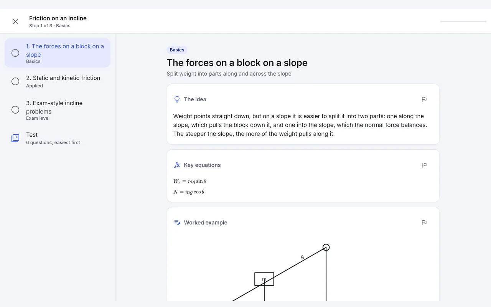

Handwritten notes that check your math
Scratchwork is a notes app for STEM students who work problems by hand. Write with a pen and it reads your steps, then points to the first one that went wrong. It also turns your notes and class material into practice tests, lessons and flashcards.
Request an invite See the features
Invite-only beta. Android tablets and phones, and Windows. iOS is planned.

It checks each step, not just the answer
Turn on Math help and end a line with =. A faint answer appears, and a tutor flags any step that does not add up. Or circle a few lines with the lasso and tap Math: every line gets a tick or a cross, and the first wrong step comes with the fix.
If it read your handwriting wrong, tap the part and correct it. Steps the app can settle on your device are checked there, without AI, and the card says so.

Practice tests from your own class
Open a class folder, tap Study, and pick a practice test. Scratchwork writes it from your notes and the class material you have connected, solved the way your course teaches. Multiple choice, short answer and worked problems, timed if you want.
Answer keys are checked before you see them. If a key does not check out, the question is dropped and the test says so. Every miss shows why, and goes to your Mistakes Log.

Lessons and flashcards from the same notes
A lesson takes one topic a step at a time: the idea, the key equations, a worked example, then a check question. Miss one and it teaches that part again. It can read the lesson aloud.
Flashcards come from your notes and from the questions you missed, and they come back on a schedule.

Who it is for
University students in calculus, physics, dynamics, circuits, differential equations and similar classes, who work problems on a tablet or on paper and want to find the wrong step before the exam does.
It can connect to Blackboard, WebAssign and WeBWorK so due dates, files and homework sit next to your notes. You sign in on your school's own page, and Scratchwork only reads. It never submits, saves or starts anything.
Invite-only beta
Scratchwork is in an invite-only beta. Email me which device you will use (Android tablet, Android phone or Windows) and I will reply with how to install it. That is all I ask. There is no form and no sign-up on this site.
Expect rough edges. The app has a Send feedback button, and I read what comes in. No prices are set yet, and nothing in the beta can charge you.
Why I built it
I am a student, and I built Scratchwork because I wanted to find out which line of a solution was wrong without waiting for a grade, and to practice from the problems my class actually uses. Your notes stay on your device unless you sign in to sync them. There are no ads, and I do not sell your data. Read the privacy policy.